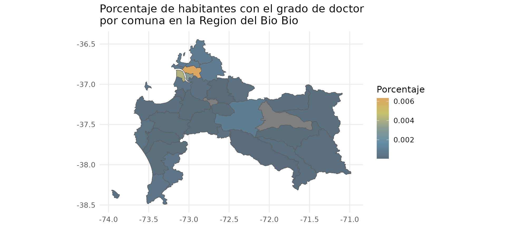

Uso basico del paquete censo2017
Mauricio Vargas S.
2024-03-04
Source:vignettes/censo2017.Rmd
censo2017.RmdIntroduccion
Este paquete se integra perfectamente con el tidyverse, con el que daremos un ejemplo muy basico para mostrar sus principales funciones.
Aproximacion de la poblacion con el grado de doctor en la Region del Bio Bio.
Se procedera a obtener una aproximacion usando dplyr ya que, puede haber personas que no sean de la comuna y aparezcan censadas en ella. Sin embargo, cabe aclarar que para esta ocasion no haremos el filtro que corrige esto. Nuestra idea es mantener el ejemplo lo mas simple posible.
Primero que todo, se cargan los paquetes necesarios.
• censo2017: Proporciona los datos censales para poder generar las tablas y graficos de este ejemplo, • dplyr: Facilta filtrar datos en una tabla, unir distintas tablas y en general todas las tareas de limpieza y transformacion de datos. * ggplot2: Nos permite graficar usando el concepto de “gramatica de graficos”, es decir que podemos ir creando graficos incrementales y controlar los ejes, titulos y demas elementos por separado. • chilemapas: Nos entrega mapas terrestres con topologias simplificadas. Esto significa, que este paquete al contener poligonos que generan graficos, y no tablas, nos permite un uso mas sencillo para lo que queremos realizar, que es darle un complemento visual a la información cargada desde censo2017.
Hay que realizar algunos cruces de tablas, de manera de filtrar la region que nos interesa.
Comenzamos con la tabla zonas: generamos la provincia a partir del geocodigo y luego filtro para unir hasta llegar a la tabla personas. Nos interesa utilizar la variable p15, cuya descripcion esta en la tabla variables y cuya codificacion aparece en la tabla variables_codificacion.
nivel_educacional_biobio <- tbl(censo_conectar(), "zonas") %>%
mutate(
region = substr(as.character(geocodigo), 1, 2),
comuna = substr(as.character(geocodigo), 1, 5)
) %>%
filter(region == "08") %>%
select(comuna, geocodigo, zonaloc_ref_id) %>%
inner_join(select(tbl(censo_conectar(), "viviendas"), zonaloc_ref_id, vivienda_ref_id), by = "zonaloc_ref_id") %>%
inner_join(select(tbl(censo_conectar(), "hogares"), vivienda_ref_id, hogar_ref_id), by = "vivienda_ref_id") %>%
inner_join(select(tbl(censo_conectar(), "personas"), hogar_ref_id, nivel_educ = p15), by = "hogar_ref_id") %>%
collect()Con lo anterior, los niveles educacionales de las personas censadas se pueden agrupar por comuna y obtener la cuenta proporcionada en base a la suma total.
nivel_educacional_biobio <- nivel_educacional_biobio %>%
group_by(comuna, nivel_educ) %>%
summarise(cuenta = n()) %>%
group_by(comuna) %>%
mutate(proporcion = cuenta / sum(cuenta))Vemos los datos antes de continuar.
nivel_educacional_biobio
#> # A tibble: 860 × 4
#> # Groups: comuna [54]
#> comuna nivel_educ cuenta proporcion
#> <chr> <int> <int> <dbl>
#> 1 08101 1 4851 0.0217
#> 2 08101 2 2701 0.0121
#> 3 08101 3 3579 0.0160
#> 4 08101 4 831 0.00372
#> 5 08101 5 37538 0.168
#> 6 08101 6 5687 0.0254
#> 7 08101 7 47356 0.212
#> 8 08101 8 18641 0.0834
#> 9 08101 9 5854 0.0262
#> 10 08101 10 2653 0.0119
#> # ℹ 850 more rowsCreamos la variable mapa_biobio haciendo un filtro para obtener unicamente los datos de la region con codigo “08” (region del Bio Bio) desde mapa_comunas. Luego de eso, haremos un left join (union de tablas manteniendo todas las filas de la tabla izquierda o inicial) desde la tabla chilemapas, donde obtendremos el mapa de la provincia, y la uniremos con los datos coincidentes segon el codigo_comuna de la tabla censo2017.
mapa_biobio <- mapa_comunas %>%
filter(codigo_region == "08") %>%
left_join(nivel_educacional_biobio, by = c("codigo_comuna" = "comuna"))Ahora que cargamos toda la informacion necesaria en R desde la base de datos, debemos cerrar la conexion SQL (importante).
Finalmente procedemos a generar el mapa.
Primero, creamos la variable colors, en el que incluiremos los codigos hexadecimales de los colores que utilizaremos al momento de crear el mapa.
Luego de hecho esto, utilizamos geom_sf del paquete ggplot2, que se usa para visualizar objetos de caracteristicas simples (sf = simple features). Geom_sf dibujara diferentes objetos geometricos a partir de una columna de tipo ‘sf’ que debe estar presente en los datos.
Seleccionamos el codigo_comuna y geometry (que contiene los poligonos que componen cada region) desde el mapa_biobio, que creamos anteriormente. Volvemos a hacer un left_join ahora de mapa_biobio seleccionando unicamente codigo_comuna, nivel_educ y proporcion.
colors <- c("#DCA761","#C6C16D","#8B9C94","#628CA5","#5A6C7A")
g <- ggplot() +
geom_sf(data = mapa_biobio %>%
select(codigo_comuna, geometry) %>%
left_join(
mapa_biobio %>%
filter(nivel_educ == 14) %>%
select(codigo_comuna, nivel_educ, proporcion),
by = "codigo_comuna"
),
aes(fill = proporcion, geometry = geometry),
size = 0.1) +
scale_fill_gradientn(colours = rev(colors), name = "Porcentaje") +
labs(title = "Porcentaje de habitantes con el grado de doctor\npor comuna en la Region del Bio Bio") +
theme_minimal(base_size = 13)
g
Notas:
- El uso de
tbl()ycollect()en la primera parte se podra entender mejor leyendo, por ejemplo, A Crash Course on PostgreSQL for R Users. - En la segunda parte se usa
censo_tabla()ya que SQL almacena la columnageometry(de tipo poligono) como cadena de texto mientras que R lee poligonos sin problema. - En la tercera parte hago un join entre el mapa completo y la tabla con quienes tienen el grado de doctor. Este paso, aunque pueda parecer redundante, es necesario si quiero mostrar las zonas con 0 doctores y si lo omito se borran algunas zonas del mapa.
- El mapa que se genero usando las funciones de chilemapas podria haber generado con las cartografias oficiales del Censo (ver repositorio cartografias-censo2017. Esta alternativa entrega un mayor nivel de detalle, pero requiere mayor esfuerzo para leer las cartografias y el tiempo requerido para generar los mapas aumenta fuertemente.
Ejercicios para el usuario
- Realizar un grafico similar al del ejemplo pero a nivel de zona censal.
- Explorar la columna
p10en la tablapersonasy realizar un grafico que de cuenta de la poblacion efectiva de la comuna (e.g. mejorando el problema de personas que podrian no ser de la comuna en el ejemplo). - Agregar datos al mapa sin usar
chilemapas. Una forma de hacerlo es la siguiente:
mapa_biobio <- censo_tabla("mapa_comunas") %>%
filter(region == "08") %>%
left_join(nivel_educacional_biobio, by = "comuna")